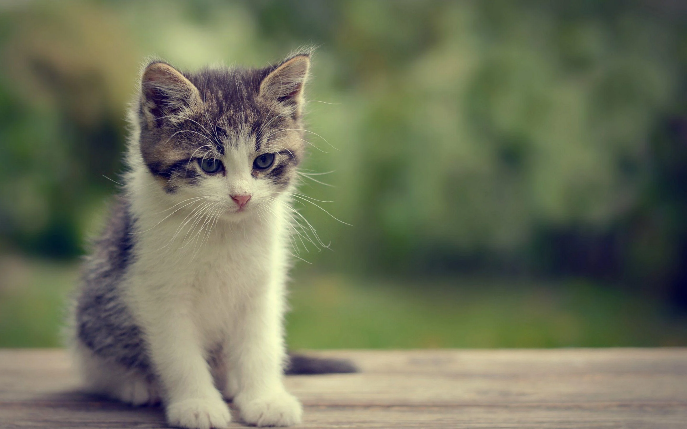

Julia Pater
Co umiem z informatyki?
Umiem tworzyć tabele i wykresy w exelu.
Czego chciałabym się nauczyć?
Chciałabym nauczyć się programować i tworzyć własne projekty (domów, ubrań, kosmetyków etc.).
Co chcę robić w przyszłości?
W przyszłości chciałabym podróżować, poznawać nowe kultury, uczyć się i pomagać aktywmie zwierzętomi.
Co chcę robić w przyszłości?
Moimi ulubionymi zwierzętami są koty. Koty są niezależnymi zwierzętami, chociaż potrafią stworzyć silną więź z człowiekiem.